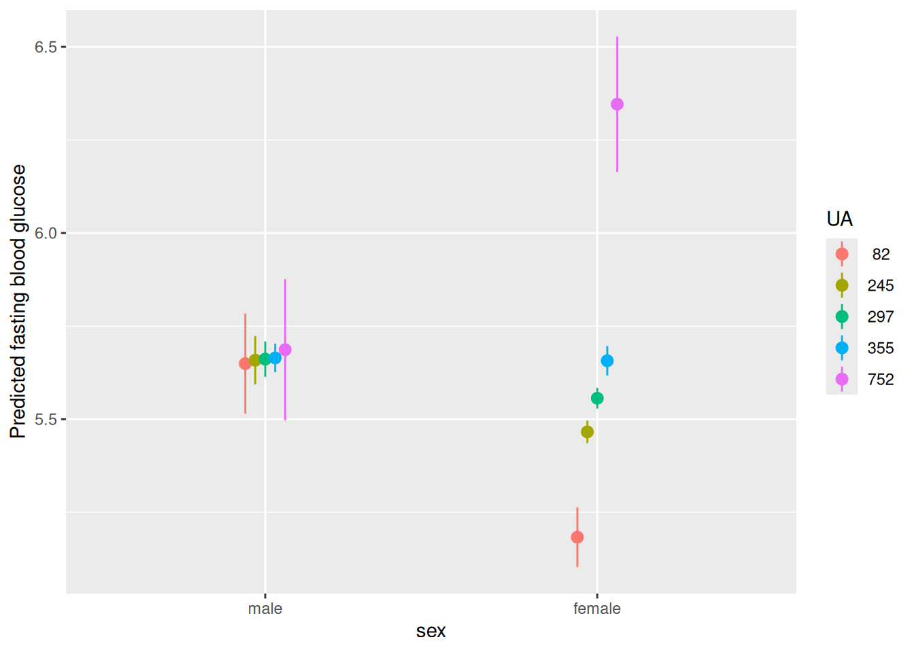
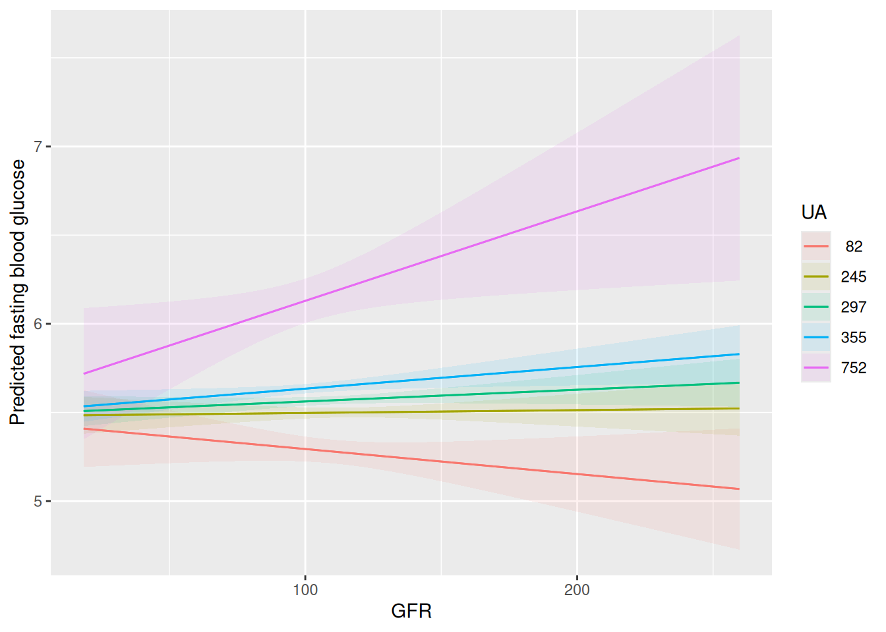
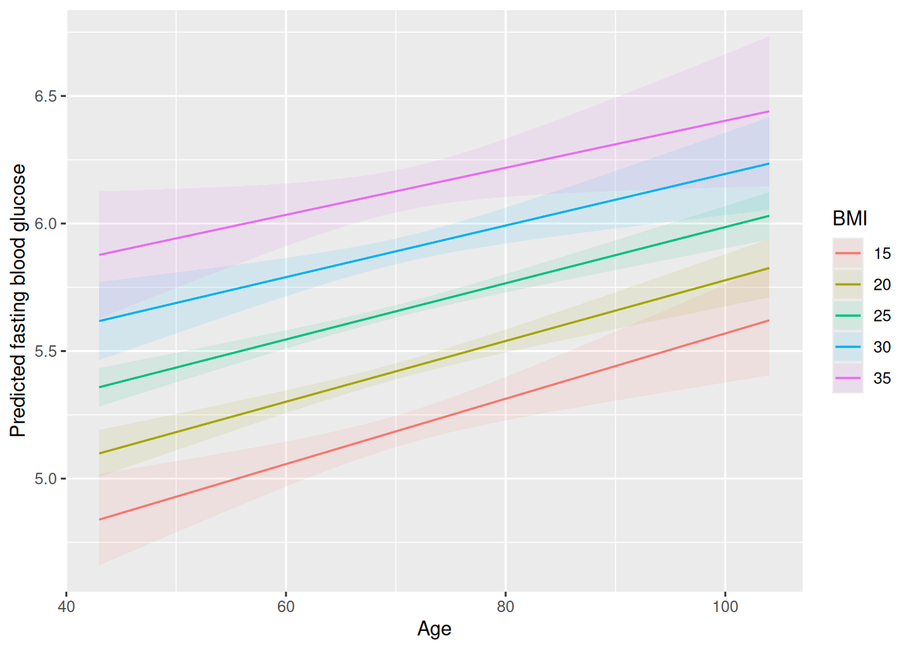
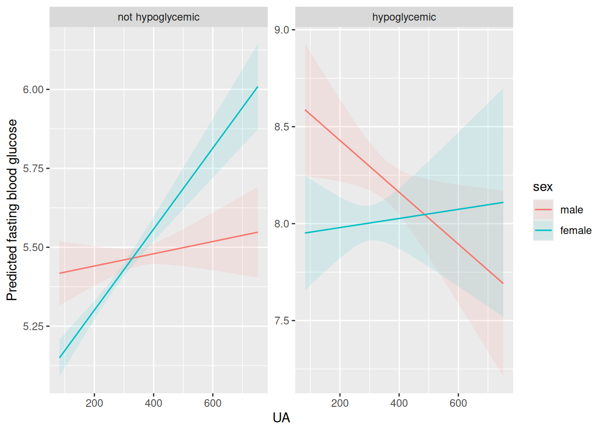
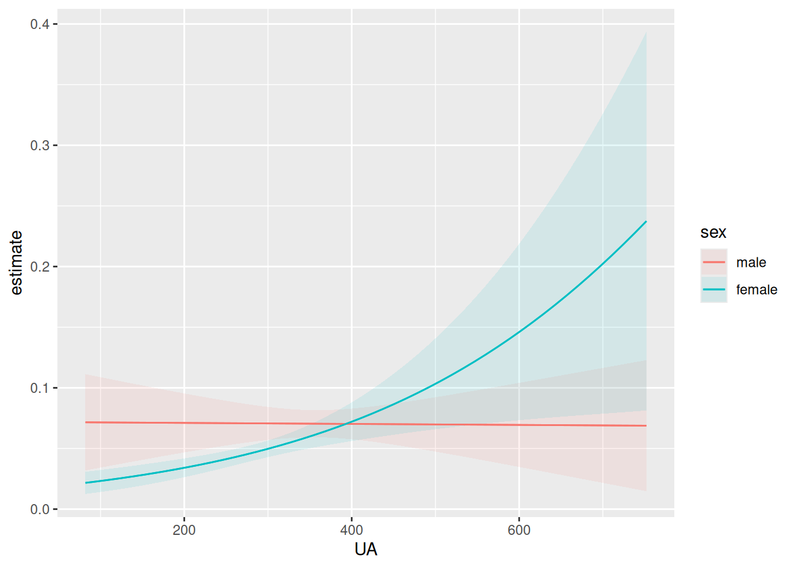

SUA_data <- readr::read_csv("https://zenodo.org/records/8292712/files/SUA_CVDs_risk_factors.csv")
SUA_data <- SUA_data |>
dplyr::mutate(
sex = factor(sex,
levels = c(1, 2),
labels = c("male", "female")
),
hyperglycemia = factor(hyperglycemia,
levels = c(1, 2),
labels = c("not hypoglycemic", "hypoglycemic")
),
) |>
dplyr::filter(
Times == 3
)25 Exercises: Conditional variables
Warning
🚧 This section is being actively worked on. 🚧
TipConditional variables
Prerequisite for these exercises was covered within the session and is therefore not repeated here. The exercises build on this material.
25.1 Learning objectives
The learning objectives for this session are:
- Udvise forståelse for usikkerheds- og sandsynlighedsbegrebet samt grundliggende begreber indenfor biostatistik
- Udvise kendskab til de grundliggende overordnede studietyper samt at skelne mellem forklarende, eksplorative og prædiktive studier
- Redegøre for forskellige typer af tilfældig og ikke tilfældig variation
- Udvise forståelse for statistiske værktøjers begrænsninger og muligheder
- Forstå statistiske problemstillinger, der er centrale for medicin med industrial specialisering og forstå, hvordan de biostatistiske værktøjer kan appliceres på disse problemstillinger
25.2 Exercises: The Zhejiang diabites experiment
Does the association between uric acid and blood glucose differ across patient groups?
A research team in Zhejiang Province is interested in whether elevated serum uric acid (UA) is associated with fasting blood glucose (FBG). Previous studies suggest that this relationship may not be identical for all patients. For example, hormonal differences, obesity, and hypertension may alter the biological pathways linking uric acid metabolism and glucose regulation.
The investigators therefore suspect that the effect of UA on FBG may depend on other patient characteristics.
You are working as a junior clinical scientist at Niels Steensen Diabetes Center and have been asked to help analyse the Zhejiang diabites experiment.
25.2.1 A: Let’s start practicing by finding interactions from written text.
Exercise 1A:
For each of the causal relationships below, name a hypothetical third variable that would lead to an interaction effect:
- Physical activity impacts body mass index (BMI).
- Smoking on risk of lung cancer.
- Antihypertensive treatment on systolic blood pressure.
- Alcohol consumption on risk of liver disease
Hint: Think of a variable that could make the relationship stronger in some patients and weaker in others.
Click for the solution
There are many potential answer, non of which can be confirmed in this session using statistics. Therefore, I provide no answers - but feel free to explore the literature on these topics!
One example: 1) You could do all the physical activity you want, but if you consume more calories than you burn, the physical activity does not impact BMI. However, if you do not consume enogugh calories, physical activity will impact BMI a lot. Therefore, calorie consumption would lead to interaction - mediating the effects - of physical activity on BMI.Exercise 2A:
Which of the following hypotheses contain an interaction:
- The association between smoking and lung cancer is stronger among individuals with a family history of lung cancer.
- Older individuals are either more likely to have hypertension than younger individuals or have hypercholesterolemia.
- The effect of exercise on BMI is greater in men than in women and in younger than in older individuals.
- Patients with severe hypertension are more likely to receive antihypertensive medication but not antipsychotic medication.
- The association between alcohol consumption and liver disease is stronger among individuals with hepatitis infection but not among individuals with diabetes.
Click for the solution
- Interaction
- No interaction
- Interaction
- No interaction
- No interaction
Exercise 3A:
For each of the explanations in 2A, write a linear model that expresses the stated relationship.
Click for the solution
- \(LungCancer = \beta_0 + \beta_1 \text{Smoking} + \beta_2 \text{FamilyHistory} + \beta_3 (\text{Smoking} \times \text{FamilyHistory})\)
- \(hypertension = \beta_0 + \beta_1 \text{Age}\) or \(hypertension = \beta_0 + \beta_1 \text{Age} + \beta_2 \text{Hypercholesterolemia}\)
- \(BMI = \beta_0 + \beta_1 \text{Exercise} + \beta_2 \text{Sex} + \beta_3 \text{Age} + \beta_4 (\text{Exercise} \times \text{Sex}) + \beta_5 (\text{Exercise} \times \text{Age})\)
- \(hypertension = \beta_0 + \beta_1 \text{HypertensionSeverity} + \beta_2 \text{antipsychoticMedicine}\)
- \(liverDisease = \beta_0 + \beta_1 \text{Alcohol} + \beta_2 \text{Hepatitis} + \beta_3 \text{Diabetes} + \beta_4 (\text{Alcohol} \times \text{Hepatitis})\)
25.2.2 B: You start working through the data you have been assigned to analyse:
The research team asks you to investigate whether the relationship between uric acid and fasting blood glucose differs between men and women.
Import the dataset by typing:
NOTE that we only use observation 3 (the latest follow-up all participants completed). Had we used all observations, we would not adhered to the iid assumption of linear regression, which would make overconfident variance estimates. To correct for this, we could have used other models that would be more appropriate for this type of data (ask an instructor if interested). However, for this lecture, we’re satisfied with only looking at a subset of the dataset.
Exercise 1B:
Fit the following model:
model1 <- lm(
FBG ~ UA + sex + UA:sex,
data = SUA_data
)- What is the outcome variable?
- Write up the mathematical definition of the model.
- Which coefficient represents the interaction?
- In plain language, what question does the interaction term answer?
- What is the regression coefficient of UA and sex? (hint:
summary()) - Are the coefficients telling us we have significant effects of UA? (hint: be careful here)
(* Question 6 can be deceiving - try as best as you can and return to this question if you learn something new*)
25.2.3 Exercise 2B
Create predicted values from the model.
library(marginaleffects)
plot_predictions(
model1,
condition = c("UA", "sex")
)- What does each line represent?
- If the lines are parallel, what does that suggest about the interaction?
- If the lines diverge as UA increases, what does that suggest?
- Which sex appears to have the stronger association between UA and FBG?
Click for the solution
- Sex (male/female)
- No interaction
- Interaction
- Females
Exercise 3B
Suppose the fitted model produced:
| Term | Estimate |
|---|---|
| UA | 0.004 |
| Sex(Female) | -0.20 |
| UA × Sex(Female) | 0.003 |
- What is the expected effect of a 100-unit increase in UA among males?
- What is the expected effect of a 100-unit increase in UA among females?
- Which group shows the stronger association?
Hint: The slope for females is the sum of the UA coefficient and the interaction coefficient.
Click for the solution
- An expected increase of 0.40 units of FBG.
- An expected increase of 0.70 units of FBG
- males. The increase in FBG per 100-unit increase in UA is 0.70 among females versus 0.40 among males.
Exercise 4B
You show the interaction coefficient 0.0016803 to your colleague, who responds:
“The interaction coefficient is small, so the interaction is not clinically important.”
- Why is this statement incomplete?
What additional information would you want to examine before deciding whether the interaction is clinically meaningful?
The same colleague argues that:
“as UA is not significant, it doesn’t have any effect.”
- Is it valid to say there is no effect? How would you respond?
Click for the solution
- The coefficient is dependent on the unit of measurement. The coefficient is expressing the effect at 0.
- The insignificant effect UA is at unit 0 - it might, however, be significant at another levels of UA and sex (due to the significant interaction).
Exercise 5B
Consider the model:
\[ FBG = β_0 + β_1UA + β_2sex + β_3(sex*UA) + ε \]
- We hypotesize that it is Sex that affects the association between UA and FBG. You find a significant affect. Can you confirm this hypothesis as a causal relationship?
- How would you explain this idea to a clinical colleague?
Click for the solution
- No, it is associational. It could be the other way -> the level of UA affects the association between FBG and sex.
- Correlation does not equal causation + interactions are symmetric!
Exercise 6B
Use marginaleffects to estimate how the effect of UA changes across groups.
plot_slopes(
model1,
variables = "UA",
condition = "sex"
) +
geom_hline(yintercept = 0, linetype = "dotted")- What quantity is plotted on the y-axis?
- How is this plot different from the prediction plot in 2B?
- Which visualization would you show a clinical audience? Why?
Click for the solution
- The slope aka \(β_3(sex*UA)\)
- It quantifies the FBG ~ UA effect in one metric and plots it for each level of sex. We loose some detail but gain some interpretability.
- No correct answer… But the new plot (6B code) is easier to digest when talking about the sex differences hypothesis. The 2B code is better for the bigger picture of the model, considering different UA levels as well.
25.2.4 C: How can we write up a clincal report for our clinical colleagues:
Exercise 1C:
The fitted model produced the following results:
| Term | Estimate | 95% CI |
|---|---|---|
| UA | 0.004 | (0.002, 0.006) |
| Sex(Female) | -0.20 | (-0.35, -0.05) |
| UA × Sex(Female) | 0.003 | (0.001, 0.005) |
Write a short results paragraph suitable for the Results section of a clinical paper. Avoid statistical jargon where possible.
Exercise 2C
The figure below shows predicted fasting blood glucose values across 5 uric acid levels for men and women.

Write:
- A one-sentence figure caption.
- A two-sentence explanation suitable for clinicians.
Click for the solution
- Fasting blood glocuse levels over 5 representative values of uric acid for males and females
- While males show stable FBG across UA levels, women do not. At the extreme low or high levels of UA, women show positive correlation with FBG.
Exercise 3C
Continuous × Continuous Interaction
A nephrologist suggests that the association between serum uric acid (UA) and fasting blood glucose (FBG) may become stronger as kidney function declines.
You fit:
model_cc <- lm(
FBG ~ UA + GFR + UA:GFR,
data = SUA_data
)- What clinical question does the interaction term address?
- If the interaction coefficient is negative, what does that imply about the relationship between UA and FBG as GFR increases?
- Which effect(s) are significant and how do we interpret the UA and GFR coefficients?
- Use {marginaleffects} to create a plot that shows how the slope of UA changes across the observed range of GFR.
- Is there a case in which GFR doesn’t affect FBG, independent of UA?
Click for the solution
- When UA levels change, does the effect of GFR on FBG change= Or the reverse: When GFR levels change, does the effect of UA on FBG change?
- Higher GFR weakens the association between UA and FBG - but this is a tough one! Always plot!
- The main-effect coefficients describe effects when the interacting variable equals 0. The interaction allows us to vary the GFR and UA values to more interesting levels.
- Here:
plot_predictions(
model_cc,
condition = c("GFR", "UA")
) +
ylab("Predicted fasting blood glucose")
- Yes, at low GFR levels. Can be computed by hand from the coefficients or seen from the plot in 3C-4.
Exercise 4C
Continuous × Continuous Interaction
Researchers suspect that BMI and hyperglycemia reinforce one another biologically. They decide to investigate whether the association between BMI and fasting blood glucose differs according to age.
You fit:
model3 <- lm(
FBG ~ BMI + Age + BMI:Age,
data = SUA_data
)- What would a positive interaction coefficient imply clinically?
- Plot the predicted FBG as a function of Age conditioned on BMI
- If two patients differ by 5 BMI units, would you expect the difference in FBG to be the same at age 45 and age 80? Explain.
A colleague states:
“BMI has an effect of 0.06 mmol/L on FBG.”
- Is this statement incomplete in the present model?
Click for the solution
- A positive interaction coefficient implies that the association between BMI and FBG becomes stronger as age increases. Clinically, this would suggest that a given increase in BMI is associated with a larger increase in FBG among older individuals than among younger individuals.
- Here:
plot_predictions(
model3,
condition = list(
"Age",
"BMI" = c(15, 20, 25, 30, 35)
)
) +
ylab("Predicted fasting blood glucose")
- Generally no, but here, you would! With an interaction term, the effect of BMI depends on age: \(\beta_{BMI} + \beta_{BMI}\cdot Age\) Note, however, that there is not effect on age in this model.
- No. The model found no evidence for an age interaction. So the BMI coefficient is sufficient to report here: 0.0595938
Exercise 5C
Three-Way Interaction
A diabetes researcher hypothesizes that the relationship between uric acid (UA) and fasting blood glucose (FBG) may depend on both sex and BMI.
You fit:
model_3way <- lm(
FBG ~ UA * sex * hyperglycemia,
data = SUA_data
)(Note: Hyperglycemia is coded 0/1 after recoding.)
- Expand the model formula into all main effects, two-way interactions, and the three-way interaction.
- What clinical question is addressed by the three-way interaction term? (hint: very difficult task - see answer or skip to 4)
- Suppose the three-way interaction coefficient is positive. What would this imply? (hint: very difficult task - see answer or skip to 4)
- Why is interpreting individual coefficients difficult in this model?
- Use {marginaleffects} to generate predicted values of FBG across UA separately for: males without hyperglycemia females without hyperglycemia males with hyperglycemia females with hyperglycemia
- What visual pattern would suggest evidence for a three-way interaction?
- Explain the meaning of the three-way interaction to a clinician without using the word “interaction.”
Click for the solution
- \(FBG=β0 + β1UA + β2sex + β3hyperglycemia + β4(UA×sex) + β5(UA×hyperglycemia) + β6(sex×hyperglycemia) + β7(UA×sex×hyperglycemia) + ε Includes\)
- Main effects:
- UA, sex, hyperglycemia
- Two-way interactions:
- UA×sex
- UA×hyperglycemia
- sex×hyperglycemia
- Three-way interaction:
- UA×sex×hyperglycemia
- THIS IS HORRICIFLY DIFFICULT - I know (: Does the association between uric acid and fasting blood glucose differ by sex, and is that sex difference itself different between people with and without hyperglycemia?
- this took me ages to write… A positive coefficient implies that the sex-specific difference in the UA–FBG slope is larger in the hyperglycemic group than in the non-hyperglycemic group. Equivalently, the modification of the UA effect by sex becomes more positive when hyperglycemia is present.
- Besides main effects, all coefficients are too cluttered in each other. So many conditional statements (depending on other variables).
- Here:
plot_predictions(
model_3way,
condition = list(
"UA",
"sex",
"hyperglycemia"
)
) +
ylab("Predicted fasting blood glucose")
- For example: In non-hyperglycemic subjects, male and female lines are nearly parallel. In hyperglycemic subjects, male and female lines diverge or cross. Formally, the sex difference in the UA–FBG relationship is not constant across hyperglycemia groups.
- The relationship between uric acid and fasting blood glucose is not the same for men and women, and this difference depends on whether a patient has hyperglycemia. In other words, the way uric acid relates to glucose levels varies across sex, but the size and direction of that variation changes between hyperglycemic and non-hyperglycemic patients.
Exercise 6C
Logistic Regression Interaction
The outcome is now whether a participant has hyperglycemia.
You fit a logistic regression model:
model_logit <- glm(
hyperglycemia ~ UA * sex,
family = binomial,
data = SUA_data
)- What quantity is being modeled by this regression?
- What does the interaction term test?
- What is the interpretation of the interaction coefficient? (hint: the next plot will help)
- Use {marginaleffects} to plot predicted probabilities of hyperglycemia across UA separately for men and women.
plot_predictions(
model_logit,
condition = c("UA", "sex"),
type = "response" # response scale (i.e., predicted probabilities between 0 and 1)
)
is this a leftover?
Suppose the predicted probabilities are:
| UA | Male | Female |
|---|---|---|
| 200 | 0.10 | 0.08 |
| 600 | 0.03 | 0.25 |
What evidence do these values provide regarding interaction?
Explain why interaction effects on the log-odds scale and interaction effects on the probability scale are not the same thing.